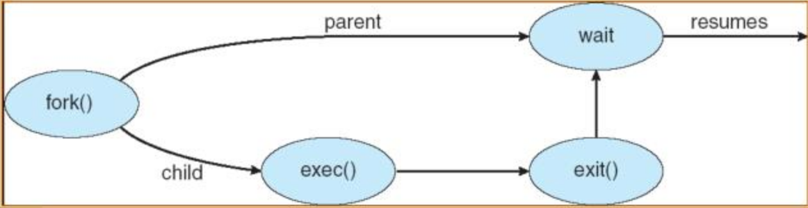
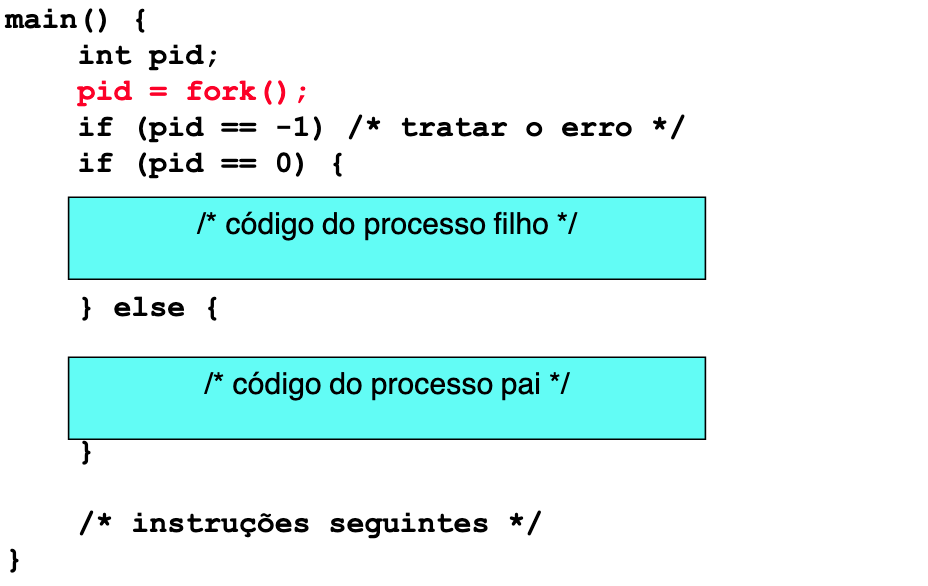
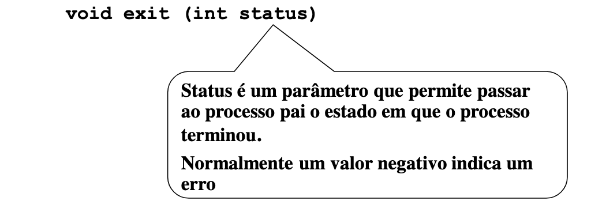
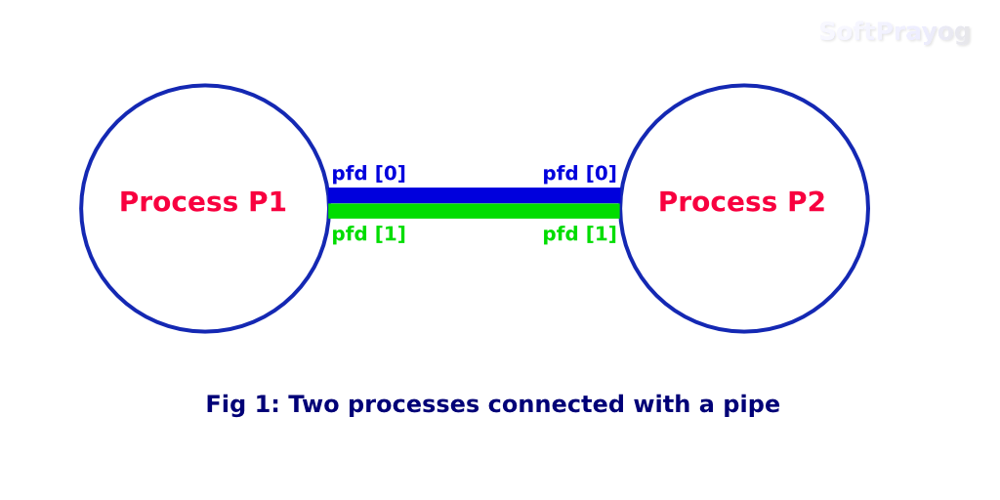

Fork

Criação de um Processo

pid = fork();
A função não tem parâmetros, em particular o ficheiro a executar.
Então que atributos diferem o pai do filho?
Processo filho é uma cópia do pai:
O espaço de endereçamento é copiado.
Contexto de execução é copiado.
Estas cópias são pesadas?
Se acontecessem literalmente, seriam.
Na verdade, a chama a fork é muito rápida.
A função retorna o PID do processo.
Este parâmetro assume valores diferentes consoante o processo em que se
efectua o retorno:
Ao processo pai é devolvido o “pid” do filho.
Ao processo filho é devolvido 0.
-1 em caso de erro.
Retorno de uma função com valores diferentes!
Nunca visto em programação sequencial.
Terminação do Processo

Termina o processo, liberta todos os recursos detidos pelo processo, ex.: os ficheiros abertos.
Assinala ao processo pai a terminação.
E se a main terminar com return em vez de exit?
Até agora, nunca chamámos exit para terminar programas
Terminação de programa feita usando return (int) na função main do programa
Qual a diferença?
Nenhuma, pois o compilador assegura que return da main resulta em chamada a
exit!
Em Unix existe uma função para o processo pai se sincronizar com a
terminação de um processo filho
Bloqueia o processo pai até que um dos filhos termine
Exemplo 1
/*
Ficheiro: fork.c
Autor: João Caldeira
Este programa demonstra algumas operações básicas sobre processos.
*/
#include
#include
#include // para o fork() e o sleep()
#include // para o wait()
#define MAX_ITER 3
/*
RESUMO DO PROGRAMA
Começamos por fazer a chamada de sistema fork() e guardar o seu valor de retorno.
O processo criado (processo filho) é uma cópia do pai - o espaço de endereçamento
e o contexto de execução são copiados.
Qual será o valor de retorno da chamada fork()?
- ao processo pai é devolvido o pid (process id) do filho
- ao processo filho é devolvido 0 (zero)
- caso a chamada de sistema falhe, é devolvido -1
Tendo dois processos a executar o mesmo código, teremos então 3 condições:
- se o valor de retorno for igual a 0, trata-se do processo filho, e portanto
o código executado será o que está incluído nessa condição
- se o valor de retorno for superior a 0, temos o pid do filho, pelo que será
o pai a executar o código incluído nessa condição
- se o valor de retorno for inferior a 0, a chamada de sistema falhou e
portanto terminamos o programa
*/
int main ()
{
int r = fork(); // guardamos o valor de retorno do fork()
if (r == 0) { // verificar se é o filho
// CÓDIGO DO PROCESSO FILHO
int i;
// chamada de sistema que devolve o pid do processo
printf("Filho:\tHello! Sou o filho com pid=%d.\n", getpid());
for (i = 0; i < MAX_ITER; i++) {
sleep(1);
printf("Filho:\tExisto há cerca de %d segundos!\n", i+1);
}
sleep(1);
printf("Filho:\tMr. Stark, I don't feel so good... Vou terminar!\n");
// filho termina com sucesso
exit(EXIT_SUCCESS);
} else if (r > 0) { // verificar se é o pai
// CÓDIGO DO PROCESSO PAI
int status;
int pid;
printf("Pai:\tHello! Sou o pai que criou o filho pid=%d\n", r);
// execução do pai é suspendida até que um dos seus filhos termine
pid = wait(&status);
/*
- wait(): devolve o pid do filho que terminou, ou -1 caso ocorra um erro
- WIFEXITED: devolve "true" caso o filho tenha terminado normalmente,
"false" caso contrário
- WEXITSTATUS: devolve o exit status do filho (em caso de sucesso, o valor é 0)
*/
if (WIFEXITED(status))
printf("Pai:\tFilho %d terminou com código de retorno %d.\n", pid, WEXITSTATUS(status));
else
printf("Pai:\tFilho %d terminou abruptamente.\n", pid);
// pai termina com sucesso
exit(EXIT_SUCCESS);
} else { // verificar se a chamada fork() deu erro
printf("Oops! Erro no fork().\n");
exit(EXIT_FAILURE);
}
exit(EXIT_SUCCESS);
}
Exemplo 2
#include
#include
#include
#include
#include
int main (int argc, char** argv) {
int r = fork();
if (r == 0) {
//So o filho entrara nesta parte!!!
printf("ola! sou o filho com pid=%d\n", getpid());
sleep(20);
printf("filho: vou terminar\n");
exit(EXIT_SUCCESS);
}
else if (r > 0) {
int status;
int pid;
//So o pai entrara aqui!!!
printf("ola! sou o pai que criou o filho pid=%d\n", r);
sleep(40);
pid = wait(&status);
if (WIFEXITED(status))
printf("pai: filho %d terminou com exit(%d)\n", pid, WEXITSTATUS(status));
else
printf("pai: filho %d terminou abruptamente\n", pid);
exit(EXIT_SUCCESS);
}
else
return 1;
return 0;
}
Pipe

#include
#include
#include
#include
/* Exemplo de comunicação entre pai e filho usando pipe simples, programado durante a aula de SO. */
char msg[] = "ola!";
int main() {
char buffer[1024];
int fd[2];
if (pipe(fd) == -1) {
perror("Erro ao criar o pipe");
return 1;
}
printf("pipe foi criado\n");
int p = fork();
if (p==-1) {
perror("Erro ao criar processo filho");
return 2;
}
if (p==0) {
/* Processo filho */
sleep(5);
printf("Vou enviar mensagem ao pai\n");
write(fd[1], msg, sizeof(msg));
}
else {
/* Processo pai */
printf("Processo pai vai aguardar por mensagem do filho\n");
if (read (fd[0], buffer, sizeof (msg)) == -1) {
perror("Erro na leitura");
return 3;
}
printf("recebi esta mensagem: %s\n", buffer);
}
return 0;
}
Named Pipe
Exemplo 1
#include
#include
#include
#include
#include
#include
/* Exemplo com named pipes criado durante a aula teórica de SO.
Objetivo: dois programas, P1 e P2, comunicam por named pipe.
Mais precisamente: P1 cria o named pipe e aguarda por mensagem enviada por P2. */
char msg[] = "ola!";
int main() {
char buffer[1024];
char *pipename = "/tmp/so-pipe";
unlink(pipename);
if (mkfifo (pipename, 0644) == -1) {
perror("Erro no mkfifo");
return 1;
}
printf("pipe foi criado\n");
int p = open(pipename, O_RDONLY);
if (p==-1) {
perror("Erro ao abrir o pipe");
return 2;
}
if (read (p, buffer, sizeof (msg)) == -1) {
perror("Erro na leitura");
return 3;
}
printf("recebi esta mensagem: %s\n", buffer);
return 0;
}
Exemplo 2
#include
#include
#include
#include
#include
#include
char msg[] = "ola!";
int main() {
char buffer[1024];
int p = open("/tmp/so-pipe", O_WRONLY);
if (p==-1) {
perror("Erro ao abrir o pipe");
return 1;
}
sleep(5);
if (write (p, msg, sizeof (msg)) == -1) {
perror("Erro ao escrever no pipe");
return 2;
}
printf("Escrevi e vou retornar\n");
return 0;
}
Exemplo 3 (Escreve Primeiro)
// C program to implement one side of FIFO
// This side writes first, then reads
#include
#include
#include
#include
#include
#include
int main()
{
int fd;
// FIFO file path
char * myfifo = "/tmp/myfifo";
// Creating the named file(FIFO)
// mkfifo(, )
mkfifo(myfifo, 0666);
char arr1[80], arr2[80];
while (1)
{
// Open FIFO for write only
fd = open(myfifo, O_WRONLY);
// Take an input arr2ing from user.
// 80 is maximum length
fgets(arr2, 80, stdin);
// Write the input arr2ing on FIFO
// and close it
write(fd, arr2, strlen(arr2)+1);
close(fd);
// Open FIFO for Read only
fd = open(myfifo, O_RDONLY);
// Read from FIFO
read(fd, arr1, sizeof(arr1));
// Print the read message
printf("User2: %s\n", arr1);
close(fd);
}
return 0;
}
/* Source: https://www.geeksforgeeks.org/named-pipe-fifo-example-c-program/ */
Exemplo 4 (Lê Primeiro)
// C program to implement one side of FIFO
// This side reads first, then reads
#include
#include
#include
#include
#include
#include
int main()
{
int fd1;
// FIFO file path
char * myfifo = "/tmp/myfifo";
// Creating the named file(FIFO)
// mkfifo(,)
mkfifo(myfifo, 0666);
char str1[80], str2[80];
while (1)
{
// First open in read only and read
fd1 = open(myfifo,O_RDONLY);
read(fd1, str1, 80);
// Print the read string and close
printf("User1: %s\n", str1);
close(fd1);
// Now open in write mode and write
// string taken from user.
fd1 = open(myfifo,O_WRONLY);
fgets(str2, 80, stdin);
write(fd1, str2, strlen(str2)+1);
close(fd1);
}
return 0;
}
/* Source: https://www.geeksforgeeks.org/named-pipe-fifo-example-c-program/ */